Versão 2.0 · Outubro de 2026
Todas as telas deste manual usam dados fictícios: empresa, clientes, lotações, centros de custo, fornecedores, pessoas, documentos, contatos e valores foram substituídos por exemplos.
Se não lembrar a senha, use o link Esqueceu a senha? na própria tela de login.
Tela de login
1.2 Tela inicial
Após o login o sistema abre o painel inicial, com Missão, Visão, Valores e Política de Gestão da Qualidade da empresa. Duas áreas ficam fixas em todo o sistema:
Menu lateral (à esquerda): todos os módulos. O campo Filtrar Menu localiza um item pelo nome sem precisar abrir cada grupo.
Barra superior: botão para recolher o menu, área de downloads, notificações, chat, tela cheia e o menu do seu usuário.
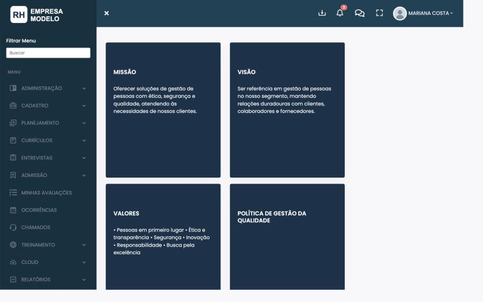
Tela inicial, com o menu lateral e a barra superior
1.3 Barra superior
Ícone
Para que serve
✕ (ao lado do logotipo)
Recolhe ou expande o menu lateral, liberando espaço para a tela.
Downloads (seta para baixo)
Área onde ficam os arquivos gerados pelo sistema (planilhas Excel, PDFs). As exportações são processadas em segundo plano e aparecem aqui quando ficam prontas.
Sino
Notificações. O número em vermelho indica quantas ainda não foram lidas — por exemplo, “Seu excel está pronto” ou “Importação de treinamentos concluída”.
Balões
Chat interno e lista de contatos.
Quadro
Alterna para tela cheia.
Seu nome e foto
Menu do usuário, com acesso a Alterar senha e à saída do sistema.
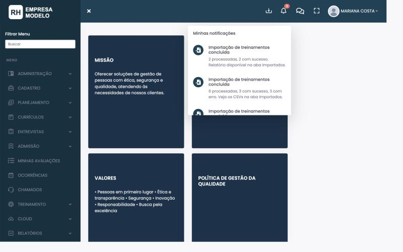
Painel “Minhas notificações” aberto a partir do sino
1.4 Alterar a senha
Menu do usuário › Alterar senha
A tela mostra a política de senhas e o botão Alterar Minha Senha, que abre o formulário de troca. A nova senha precisa ter:
8 ou mais caracteres;
1 letra minúscula e 1 letra MAIÚSCULA;
1 número;
1 símbolo especial (por exemplo @ $ ! % * ? &).
Não reutilize a senha atual, evite informações pessoais (nome, data de nascimento) e sequências simples.
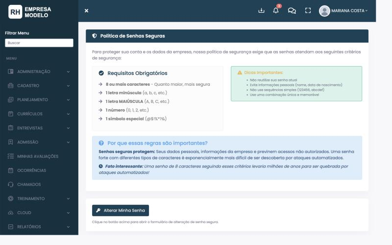
Política de senhas seguras e botão de alteração
2. Padrões das telas
Quase todas as telas do MyBPIN seguem a mesma estrutura. Entender esse padrão uma vez serve para o sistema inteiro.
2.1 Bloco FILTRO
No topo de cada listagem há um bloco FILTRO com os campos de busca daquela tela. Preencha o que quiser e clique em Buscar ou Atualizar (botão verde). Em algumas telas há também:
Mais filtros — abre filtros adicionais menos usados;
Limpar filtros — volta a listagem ao estado inicial;
caixa Por período — ao marcar, libera os campos de data inicial e final;
Exibir / Por página — quantidade de registros por página.
2.2 Listagem em cards ou em tabela
Os resultados aparecem como cards (um bloco por registro, com número de identificação, título e campos) ou como tabela. Em ambos os casos:
o selo de status à direita (Ativo, Inativo, Pendente RH, Integrado, Em aberto…) mostra a situação do registro;
o botão de três pontos (⋮) ou os ícones à direita abrem as ações daquele registro (Editar, Visualizar, Aprovar, Gerar PDF…);
no rodapé ficam o Total encontrado(s) e o seletor de Página.
2.3 Cadastrar e editar
O padrão é o mesmo em todos os cadastros:
Cadastrar: o botão ao lado de Atualizar (Cadastrar, + Cadastrar Cargo, Solicitar…) abre o formulário em branco. O título da janela começa com “Cadastrando…”.
Editar: em ⋮ › Editar (ou no ícone de lápis da linha) o mesmo formulário abre preenchido, com o título “Alterando…”. O botão de gravação passa a ser Alterar ou Salvar.
Ativar/inativar: a chave Ativo dentro do formulário tira o registro de uso sem apagá-lo.
Campos marcados com * são obrigatórios. Use Fechar ou Cancelar para sair sem gravar.
Dica: em campos de busca como “Colaborador”, “Cargo” ou “Gestor”, comece a digitar o nome e escolha o item na lista que aparece. O campo fica com um ✓ verde quando o item foi selecionado corretamente.
2.4 Exportações
Onde existe o botão Exportar Excel (ou Exportar PDF), o arquivo é gerado em segundo plano respeitando os filtros aplicados. Quando fica pronto, o sistema avisa pelo sino e o arquivo fica disponível no ícone de downloads da barra superior.
3. Administração
3.1 Fornecedores
Administração › Fornecedores
Cadastro das empresas e prestadores que se relacionam com o RH. A listagem mostra ID, Nome, Tipo, Contato e Status, com filtros por nome, Tipo e Status.
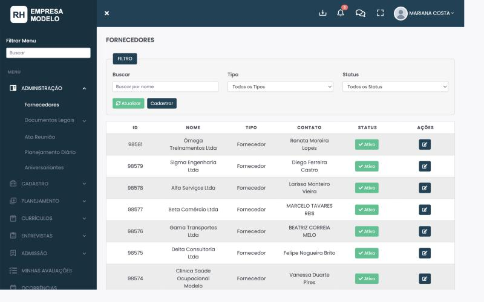
Listagem de fornecedores
Cadastrar ou editar um fornecedor
Clique em Cadastrar (novo) ou no ícone de lápis da linha (edição). O formulário tem:
Tipo — a classificação do cadastro (por exemplo, Fornecedor);
Dados do fornecedor — Tipo de pessoa, CNPJ, Razão Social e Nome Fantasia;
Endereço — CEP * (a lupa preenche o endereço a partir do CEP), Endereço *, Número, Complemento, Bairro *, Município * e UF *;
Contatos — Responsável e E-mail;
Telefones — Tipo, Número, observação e indicação do telefone principal;
Anexos e a chave Ativo.
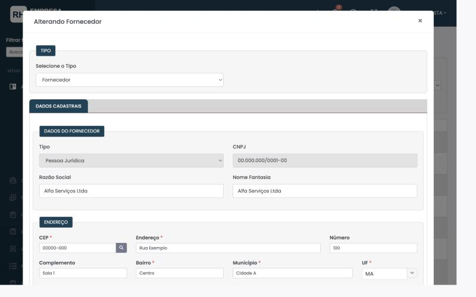
Edição de fornecedor
3.2 Documentos Legais
Administração › Documentos Legais
Grupo de telas para manter a documentação legal. O submenu traz Contrato, Documentos Empresa e Documentos SSMA (os documentos em si) e as tabelas de apoio Tipos Documentos, Tipos Serviços e Formas Contratos. Todas têm busca por nome, filtro de Status e botão Cadastrar.
O cadastro de Contrato tem duas abas: Dados cadastrais (dados do contratante, endereço, contatos, telefones e logotipo) e Serviços.
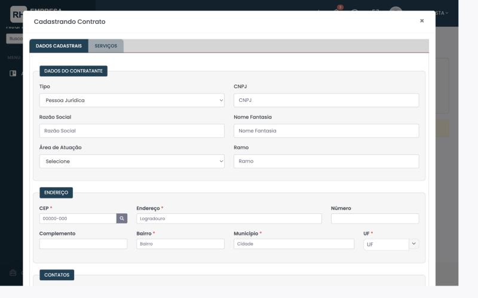
Cadastrando um contrato — aba Dados cadastrais
3.3 Ata Reunião e Planejamento Diário
Administração › Ata ReuniãoAdministração › Planejamento Diário
Registros simples de apoio à rotina. Cada tela tem um campo de busca e o botão de inclusão (Cadastrar Ata de Reunião / Cadastrar Planejamento Diário).
3.4 Aniversariantes
Administração › Aniversariantes
Lista os aniversariantes do mês com Data, E-mail, WhatsApp e a situação do envio da mensagem.
Use Aniversariantes do dia para filtrar apenas quem faz aniversário hoje.
Marque as caixas de seleção dos colaboradores desejados.
Clique em Enviar Parabéns (o contador mostra quantos estão selecionados).
O texto enviado é configurado em Mensagem de Aniversário. Linhas em verde já tiveram a mensagem enviada.
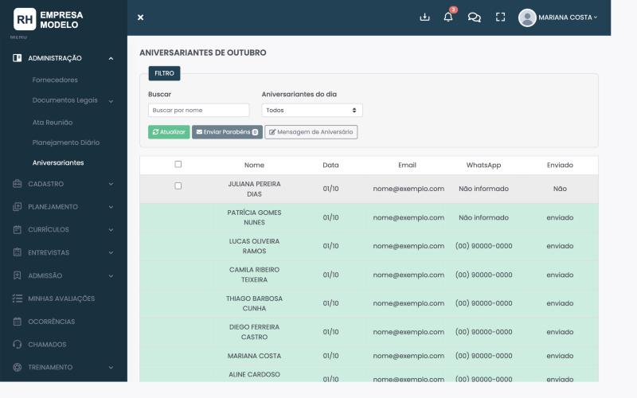
Aniversariantes do mês
4. Cadastros
Os cadastros alimentam todos os outros módulos: uma requisição de vaga só pode ser aberta para um cargo, área e centro de custo já cadastrados. Mantenha-os atualizados antes de iniciar os processos. Para cada cadastro abaixo há a tela de listagem e o formulário de inclusão/edição.
4.1 Áreas
Cadastro › Áreas
Cada área tem um Gestor responsável, um Centro de custo e o telefone do Supervisor (usado na etiqueta).
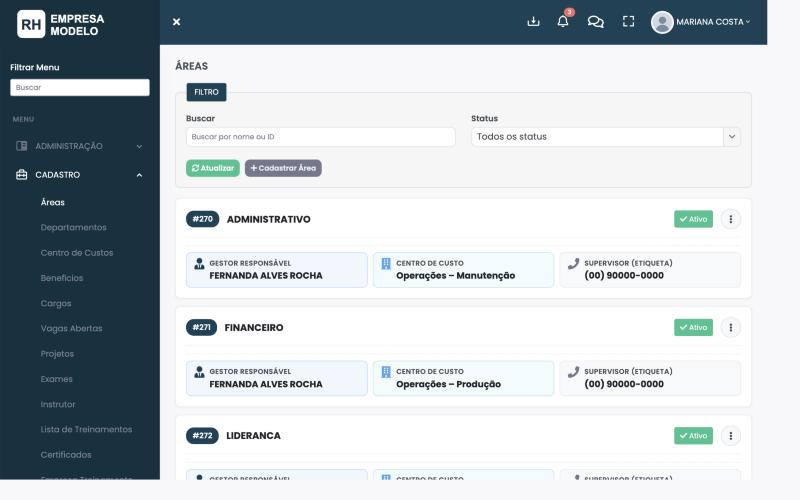
Listagem de áreas
Cadastrar ou editar uma área
Clique em + Cadastrar Área ou em ⋮ › Editar.
Informe o Nome* da área.
Preencha o Contato supervisor para etiqueta (telefone).
Digite e selecione o Gestor responsável.
Escolha o Centro de Custo.
Deixe Ativo ligado e clique em Alterar (ou Cadastrar).
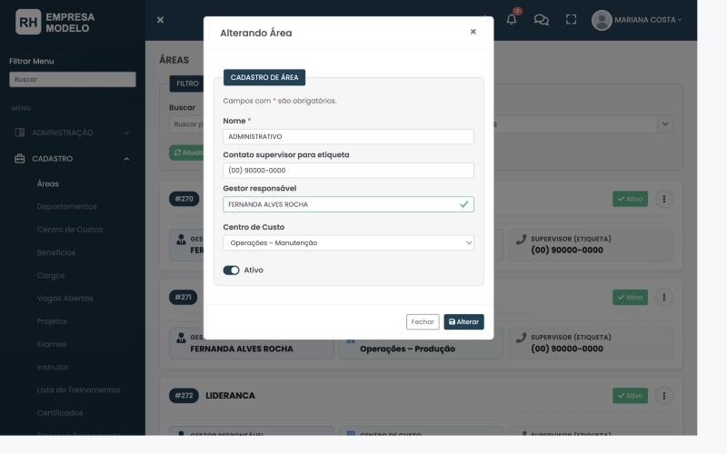
Alterando uma área
4.2 Departamentos
Cadastro › Departamentos
Listagem com busca por nome e filtro de Status. O botão + Departamento inclui um novo registro.
4.3 Centro de Custos
Cadastro › Centro de Custos
Cada centro de custo pertence a uma Lotação (CNPJ matriz ou filial) e tem um Gestor principal e um Gestor substituto. Filtre por nome/ID, Status ou CNPJ.
Importante: o gestor principal e o substituto definidos aqui são usados automaticamente no fluxo de aprovação da transferência prevista. Um centro de custo sem gestor compromete esse fluxo.
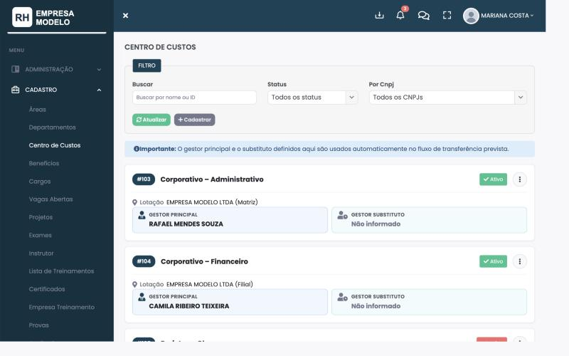
Centros de custo com seus gestores
Cadastrar ou editar um centro de custo
Clique em + Cadastrar ou em ⋮ › Editar.
Informe o Nome*.
Selecione o Gestor responsável.
Se houver, selecione o Gestor substituto — ele assume a aprovação quando o gestor principal estiver indisponível.
Em CNPJ*, escolha a matriz ou a filial à qual o centro de custo pertence.
Clique em Salvar.
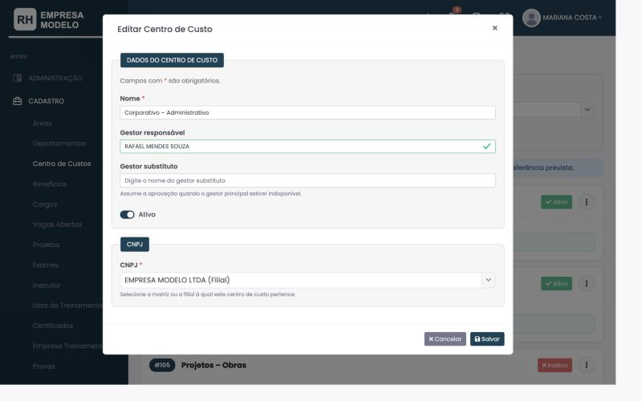
Editando um centro de custo
4.4 Benefícios
Cadastro › Benefícios
Cada benefício tem Tipo, Valor, Periodicidade, forma de Aplicação e Desconto. Os tipos são mantidos pelo botão Tipo de Benefício.
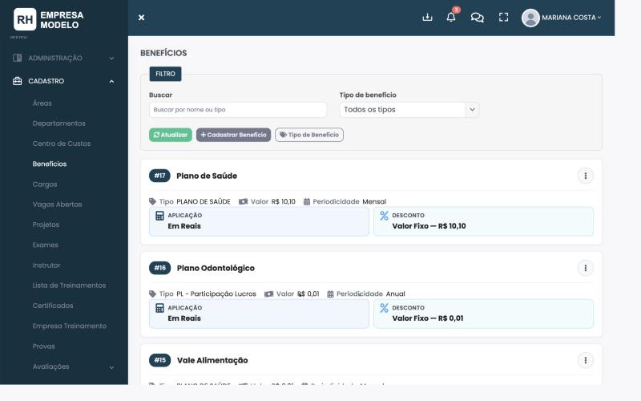
Listagem de benefícios
Cadastrar ou editar um benefício
Clique em + Cadastrar Benefício ou em ⋮ › Editar.
Informe o Nome e escolha o Tipo.
Informe o Valor e a Aplicação (por exemplo, Em Reais).
Escolha a Periodicidade (Mensal, Anual…).
Informe o Valor Descontado e a Opção de Desconto (por exemplo, Valor Fixo).
Grave com Alterar (ou Cadastrar).
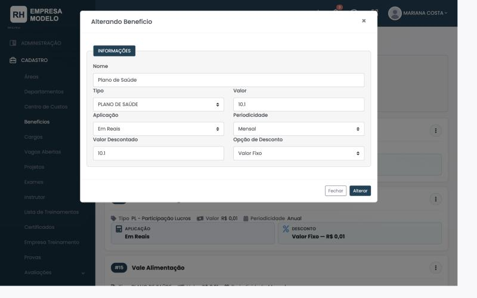
Alterando um benefício
4.5 Cargos
Cadastro › Cargos
Lista os cargos com o CBO vinculado, a quantidade de treinamentos do cargo e a situação (Ativo/Inativo). Filtre por nome/ID e Status.
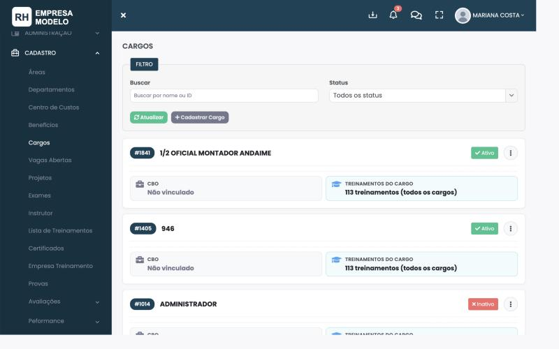
Listagem de cargos
Cadastrar ou editar um cargo
Clique em + Cadastrar Cargo (novo) ou em ⋮ › Editar (existente).
Em Sobre o cargo, informe o Título do cargo*.
Mantenha a chave Ativo ligada para o cargo aparecer nas requisições e vagas. Desligue para inativar.
Em CBO (opcional), busque pelo código, título ou família e selecione a ocupação.
Clique em Alterar (ou Cadastrar).
Treinamentos do cargo são somente leitura nesta tela. O vínculo entre treinamento e cargo é feito em Cadastro › Lista de Treinamentos; aqui aparece apenas o resumo do que já está configurado.
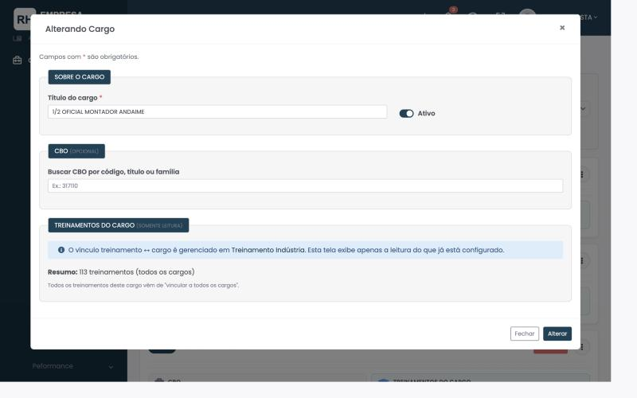
Alterando um cargo
4.6 Vagas Abertas
Cadastro › Vagas Abertas
É aqui que uma vaga é publicada para receber candidatos. Cada vaga mostra Cargo, Local, data de atualização, descrição e o link público de candidatura, com botões para copiar o endereço ou compartilhar no WhatsApp, Facebook, Instagram e LinkedIn.
Filtros: título/cargo/cidade/ID, Ativo no site, Ativo no sistema, Cargo, Cidade, Provas vinculadas e Projeto.
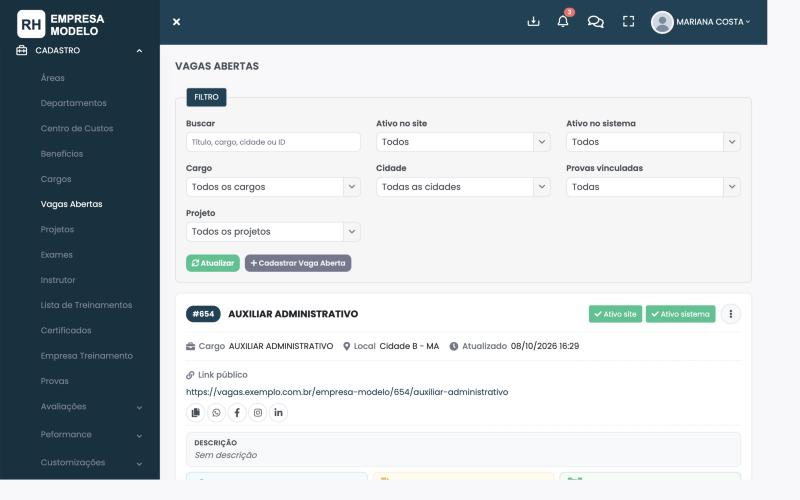
Vagas abertas, com link público e botões de compartilhamento
Cadastrar ou editar uma vaga aberta
Clique em + Cadastrar Vaga Aberta ou em ⋮ › Editar.
Em Cargo*, digite e selecione o cargo. A faixa Treinamentos vinculados ao cargo mostra os treinamentos exigidos.
Informe o Título* — é o nome que o candidato verá.
Escreva a Descrição da vaga no editor de texto.
Em Cidade*, digite e selecione o local da vaga.
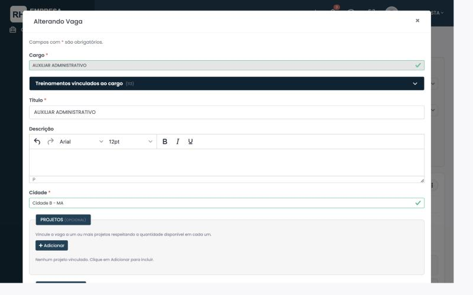
Alterando uma vaga — cargo, título, descrição e cidade
Em Projetos (opcional), clique em + Adicionar para vincular a vaga a um ou mais projetos, respeitando a quantidade disponível em cada um.
Em Provas (opcional), use + Adicionar para vincular provas que o candidato deverá fazer.
Defina a publicação: Ativo no site faz a vaga aparecer no site público de vagas; Ativo no sistema libera a vaga para uso nos processos internos.
Clique em Alterar (ou Cadastrar).
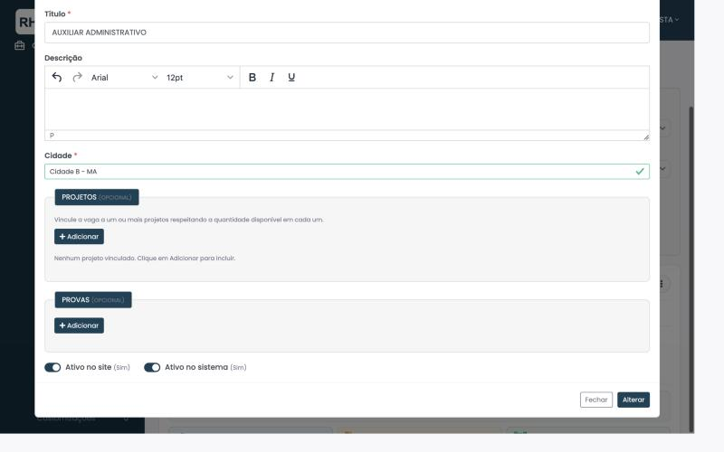
Projetos, provas e chaves de publicação
4.7 Projetos
Cadastro › Projetos
Um projeto define uma capacidade de posições. O card mostra quanto já foi distribuído em vagas abertas, quanto está disponível, quantas posições estão ocupadas e a barra de ocupação.
No formulário (+ Cadastrar Projeto ou ⋮ › Editar) informe o Nome do projeto* e a Capacidade total*. A seção Distribuição por vaga aberta permite reservar parte da capacidade para vagas específicas; a capacidade não pode ser menor do que o total já distribuído.
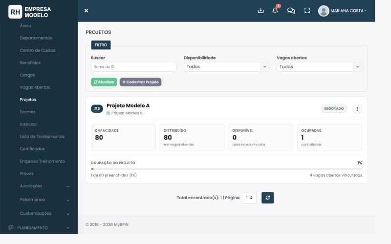
Projeto com capacidade e ocupação
4.8 Exames (clínicas)
Cadastro › Exames
Cadastro das clínicas e empresas de medicina ocupacional usadas no encaminhamento de exames. O botão + PCMSO dá acesso ao cadastro do PCMSO.
Clínicas cadastradas
No formulário informe CNPJ, Razão Social, Nome Fantasia, o endereço (CEP *, Endereço *, Bairro *, Município *, UF *), Telefone e E-mail — este último é o endereço que recebe os encaminhamentos de exame.
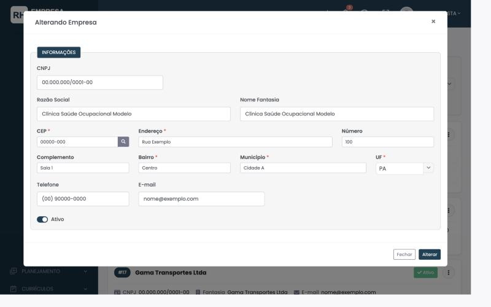
Alterando uma clínica
4.9 Lista de Treinamentos
Cadastro › Lista de Treinamentos
Catálogo de treinamentos. Cada item traz o Padrão (cliente/segmento), os Cargos vinculados, o Prazo fixo de validade em dias, a Ordem de exibição, a quem se destina e como aparece na carteira de treinamento. O botão + Assinatura Carteira cadastra a assinatura impressa na carteira.
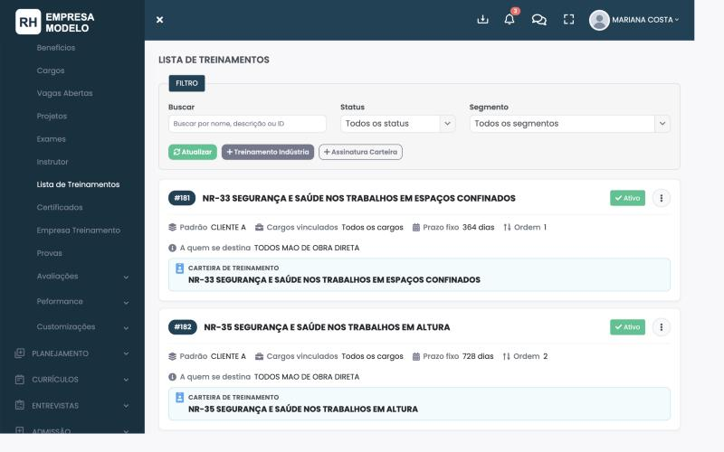
Catálogo de treinamentos
Cadastrar ou editar um treinamento
Clique em + Treinamento Indústria ou em ⋮ › Editar.
Informe o Nome* e o Nome Reduzido* (o que é impresso na carteira).
Ligue Exibir Carteira Treinamento se ele deve aparecer na carteira.
Preencha A quem se destina*.
Informe o Prazo fixo (dias para vencimento) e a Ordem.
Escolha o Segmento / Padrão de treinamento.
Ligue Vincular a todos os cargos para que o treinamento valha para qualquer cargo; desligado, escolha os cargos na lista.
Clique em Salvar.
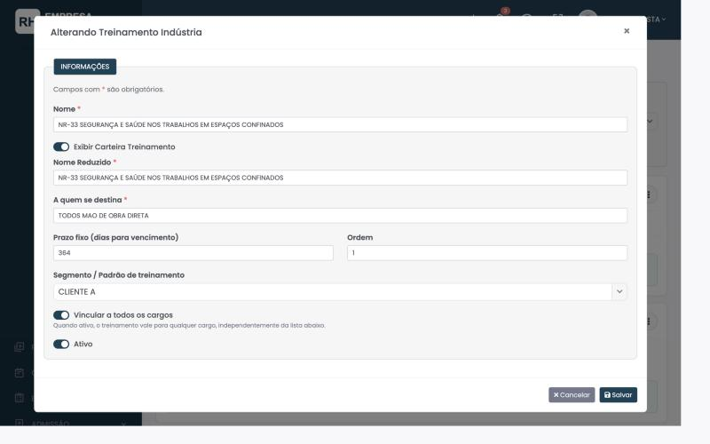
Alterando um treinamento
4.10 Instrutor, Certificados, Empresa Treinamento e Provas
Quatro cadastros de apoio a treinamento, todos com busca e botão de inclusão:
Instrutor — Nome, Cargo, Registro, situação e o arquivo da Assinatura, usada nos certificados;
Certificados — título do certificado, carga horária e validade;
Empresa Treinamento — empresas que ministram treinamentos, com endereço;
Provas — provas que podem ser vinculadas às vagas abertas.
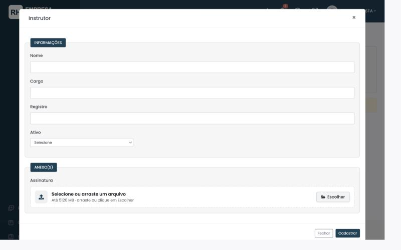
Cadastro de instrutor
4.11 Avaliações
Cadastro › AvaliaçõesCadastro › Peformance
Os dois grupos têm a mesma estrutura de quatro telas, usadas nesta ordem:
Tipos de Avaliadores — quem pode avaliar;
Tipos de Avaliações — os modelos de avaliação;
Competências — os tópicos avaliados e a quantidade de indicadores de cada um, por tipo de avaliação;
Avaliações — os ciclos, com Ano, Título, Tipo, Data início, Data fim e Status.
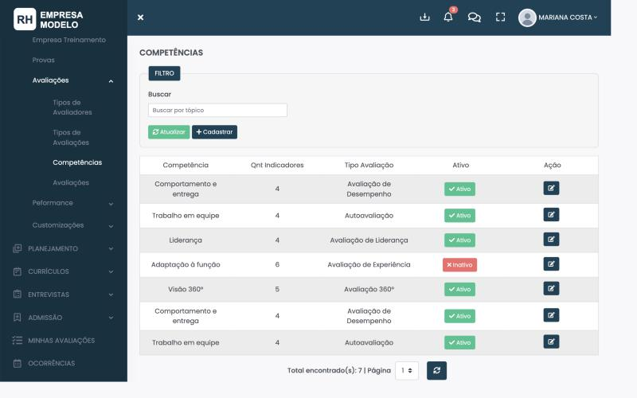
Competências por tipo de avaliação
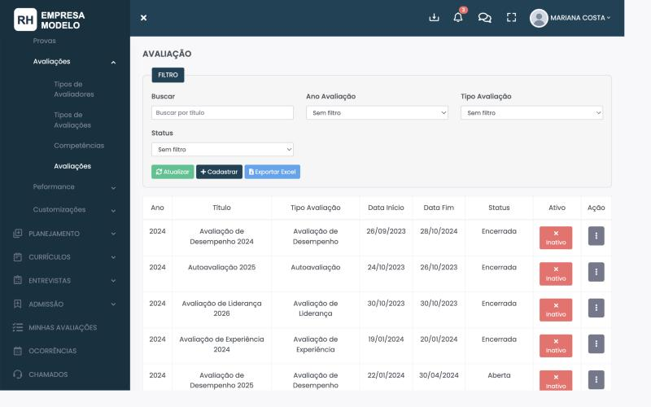
Ciclos de avaliação
Montar um ciclo de avaliação
Em Avaliações, clique em + Cadastrar.
Em Informações, preencha Título, Tipo de avaliação, Data início, Data fim, Status, se há Auto Avaliação, se está Ativo e o Ano da avaliação.
Em Fluxo, defina a ordem dos avaliadores escolhendo o Tipo de avaliador de cada etapa. Se Auto Avaliação estiver como Sim, ela ocupa a primeira posição do fluxo.
Decida se deseja mostrar as notas das etapas anteriores para o Avaliador Final.
Grave com Cadastrar.
De volta à lista, use ⋮ › Associar avaliadores para ligar cada colaborador aos seus avaliadores.
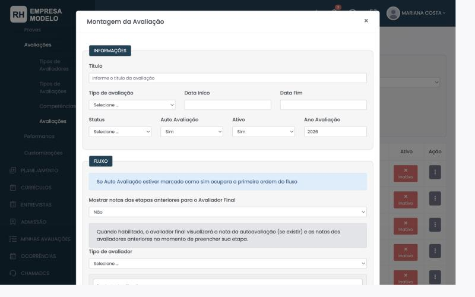
Montagem da avaliação
4.12 Customizações
Campos personalizados da Requisição de Vaga
Cadastro › Customizações › Requisição de Vaga
Cria campos extras que passam a aparecer no formulário de requisição de vaga — por exemplo “E-mail institucional” ou “Notebook”. Clique em + Novo campo, informe o Nome do campo (label)*, escolha o Tipo* (Sim/Não, texto…) e marque Campo obrigatório se for o caso.
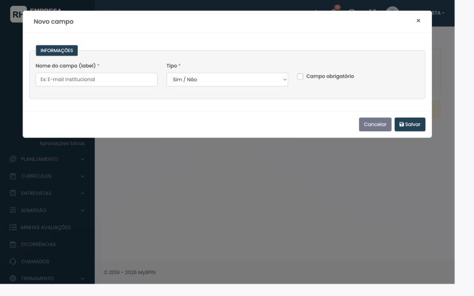
Novo campo personalizado
Aprovações Extras
Cadastro › Customizações › Aprovações Extras
Inclui uma etapa adicional de aprovação em um tipo de movimentação (por exemplo Mudança de Cargo ou Transferência).
Gestor→Aprovação Extra→RH (final)
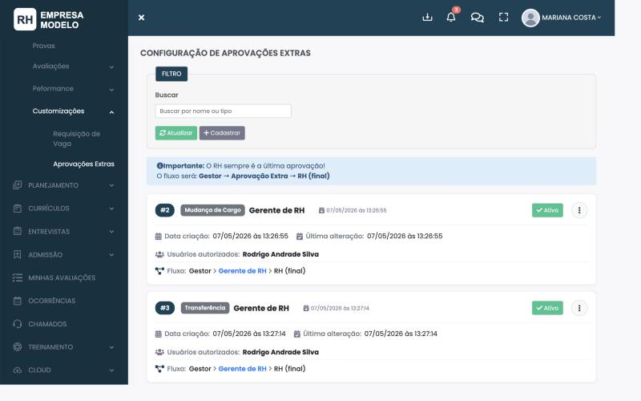
Configurações de aprovação extra
Clique em + Cadastrar.
Escolha o Tipo de Processo* que terá a aprovação extra.
Informe o Nome da Aprovação* — é o texto que aparece no fluxo (ex.: “Aguardando aprovação do SESMT”).
Em Colaborador, selecione os usuários autorizados a aprovar.
Mantenha Ativo marcado e clique em Salvar.
Importante: o RH é sempre a última aprovação do fluxo, e apenas uma configuração pode estar ativa por tipo de processo.
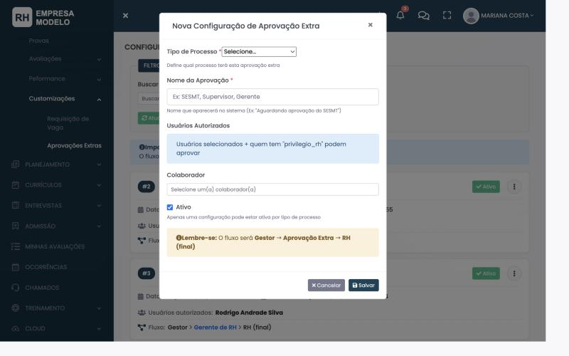
Nova configuração de aprovação extra
5. Planejamento
5.1 Requisição de Vaga
Planejamento › Requisição de Vaga
Onde o gestor ou o RH formaliza a necessidade de contratação. Cada card mostra o cargo, Quantidade, Solicitante, Gestor, Lotação, Centro de custo, Área, datas, tipo de Contratação, Prioridade, previsão de Início e o Fluxo de aprovação, com a situação de cada etapa.
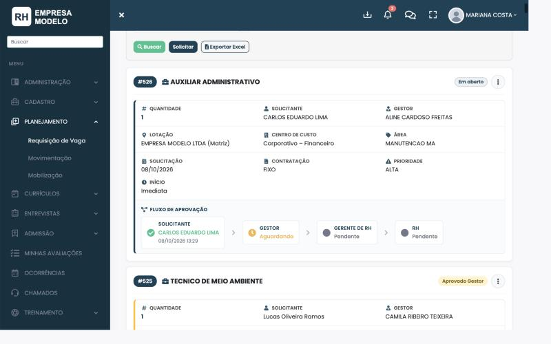
Requisição de vaga com o fluxo de aprovação
Abrir uma requisição
Clique em Solicitar.
Em Informações, escolha o Cargo, a Área, o Tipo de Contratação, a Prioridade e a Quantidade.
Em Lotação, escolha a Lotação (CNPJ) e depois o Centro de Custo.
Em Demais informações, preencha Posição, Processo, Tipo, Horário, Gestor da vaga, se o cargo está no PPRA e PCMSO, Salário, Benefício, Treinamento, a Previsão de início (ou marque Imediata) e o Solicitante.
Use Observação para detalhes adicionais e clique em Cadastrar.
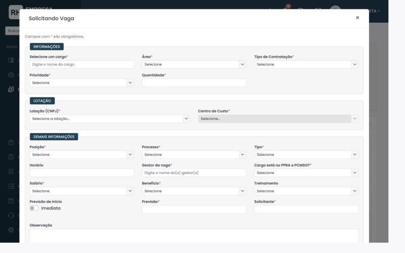
Formulário “Solicitando Vaga”
Acompanhar e aprovar
No menu ⋮ de cada requisição ficam Visualizar, Aprovação Gestor e Aprovação RH, conforme a etapa em que ela está e a sua permissão. Filtre por Período, cargo e Status, e ordene pelas mais recentes. A lista pode ser exportada em Exportar Excel.
5.2 Movimentação
Planejamento › Movimentação
Reúne, em abas, todas as movimentações de pessoal que dependem de aprovação:
Aba
Uso
Demissão
Solicitação de desligamento de um colaborador.
Férias
Programação de férias.
Admissão
Admissões previstas.
Liderança de Pessoal e Valor Extra
Solicitação de valor extra / liderança.
Mudança de Cargo
Alteração de cargo ou função.
Mudança de Intermitente p/ Fixo
Conversão de contrato intermitente em fixo.
Transferência
Mudança de centro de custo ou lotação.
Em cada aba, os filtros são Período, Colaborador/CPF, Status, Lotação (CNPJ) e Centro de custo.
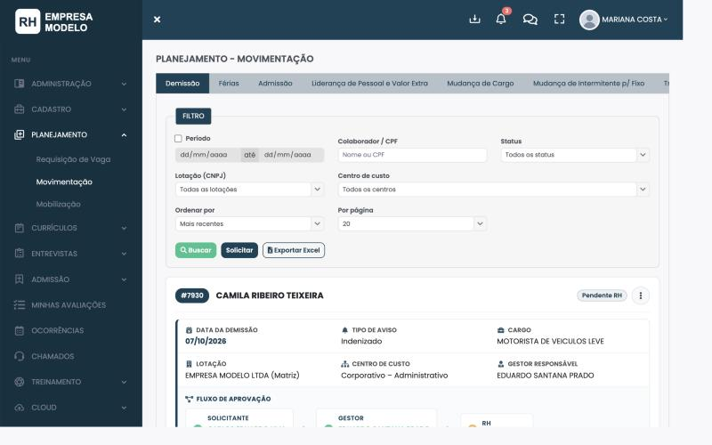
Movimentação — aba Demissão
O card mostra os dados da solicitação e o fluxo de aprovação: cada etapa aparece em verde (concluída, com nome e data), laranja (aguardando) ou cinza (pendente). O selo à direita resume a situação — por exemplo Pendente Gestor ou Pendente RH.
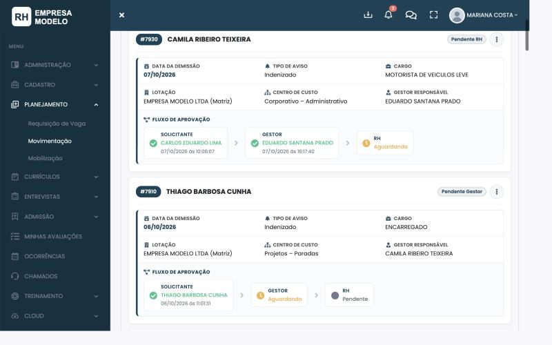
Solicitações com o fluxo Solicitante → Gestor → RH
Exemplo: solicitar uma demissão
Na aba Demissão, clique em Solicitar.
Digite o nome do Colaborador. Centro de Custo Atual e Lotação são preenchidos automaticamente.
Informe a Data da Demissão, o Tipo de Aviso e o Gestor Aprovação.
Se necessário, escreva uma Observação e inclua Anexos (arraste o arquivo ou clique em Escolher).
Clique em Cadastrar. A solicitação segue para aprovação do gestor e, por último, do RH.
No menu ⋮ de cada solicitação ficam Visualizar, Aprovação RH e, na demissão, Aviso Prévio (PDF).
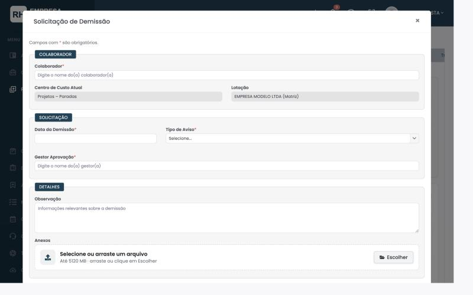
Formulário “Solicitação de Demissão”
5.3 Mobilização
Planejamento › Mobilização
Acompanhamento da mobilização por projeto. Selecione um Projeto (e, se quiser, um período) e clique em Buscar; a tela só exibe dados depois que um projeto é escolhido.
6. Currículos
6.1 Recrutamento
Currículos › Recrutamento
Banco de currículos recebidos pelas vagas abertas. No topo, três indicadores: Total cadastrados, Cadastrados nos últimos 90 dias e Selecionados no período.
Filtros: Por período, Candidato/CPF, Cargo, Estado, Lido e PCD.
Cada card mostra CPF, UF, Vaga, PCD, se já foi Selecionado, se houve Contato realizado, Experiências, Qualificações, Interesse, Data de cadastro e se o currículo já foi Lido.
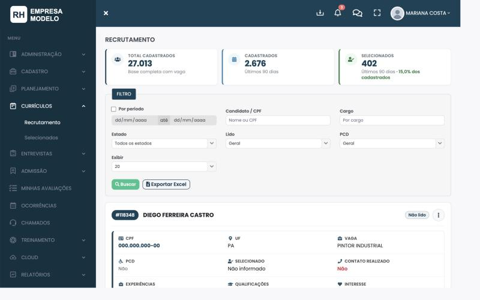
Recrutamento — banco de currículos
Analisar e recrutar um candidato
Localize o currículo pelos filtros.
Abra o menu ⋮ e escolha Recrutar. A janela Visualizando Currículo abre com as seções Dados pessoais, Endereço, Contatos, Formação, Experiências e Qualificações.
Confira e, se preciso, corrija os dados do candidato. Em Contatos, use + Adicionar para incluir outro telefone.
Na seção Feedback, ao final, registre o resultado da triagem.
Clique em Salvar.
A opção Gerar PDF, no mesmo menu, baixa o currículo em arquivo.
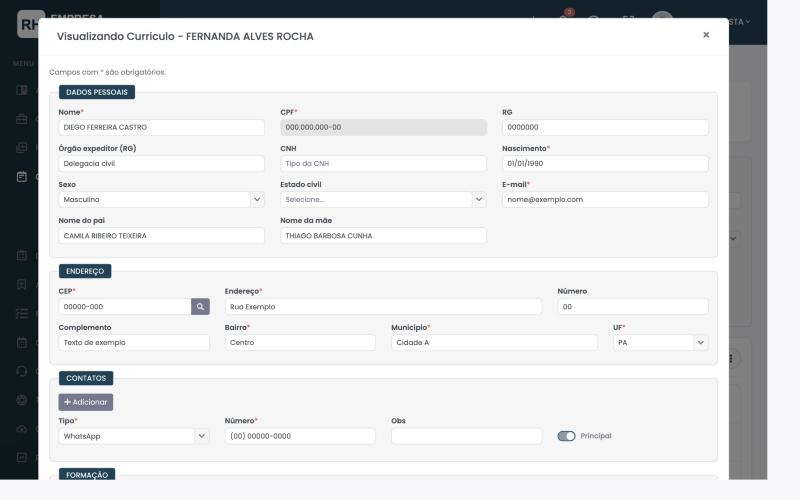
Janela de recrutamento com o currículo do candidato
6.2 Selecionados
Currículos › Selecionados
Candidatos já selecionados para uma vaga. Além dos filtros básicos (período, Nome/Cód, CPF, Cargo, Estado, PCD), é possível filtrar por Status, Prova e Etapa. O ícone de olho abre os detalhes do candidato no processo.
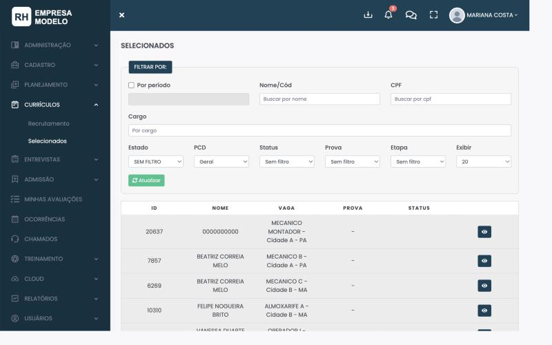
Candidatos selecionados
7. Entrevistas
O grupo Entrevistas concentra as etapas de avaliação do candidato selecionado: Parecer RH, Parecer Rota – Transporte, Parecer Entrevista Técnica, Parecer Teste Prático, Entrevista RH, Entrevista Gestor e Resultado Integrado, que consolida tudo.
7.1 Parecer RH
Entrevistas › Parecer RH
Mostra, por candidato, a Vaga, a data e o local da Entrevista e a situação de cada etapa: Parecer RH (nota), Rota de transporte, Entrevista técnica (nota), Teste prático (nota), Parecer individual e Nota individual. Etapas ainda não realizadas aparecem como aguardando.
Filtros: período, Nome, CPF, Cargo, Estado, Nota RH e Final RH.
Os ícones à direita de cada linha abrem o registro do parecer e os documentos do candidato.
Marque as caixas de seleção e use Exportar Excel para levar os dados; Limpar seleção desmarca tudo.
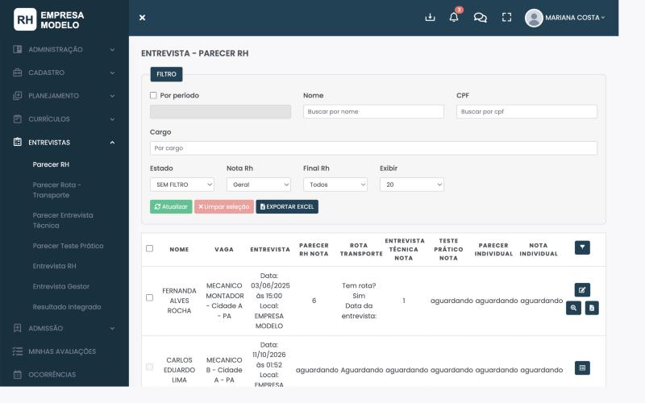
Entrevista — Parecer RH
7.2 Formulário de entrevista
A entrevista é registrada em uma janela identificada pelo código e nome do candidato. No topo ficam os Dados pessoais (somente leitura) e, abaixo, as seções a preencher:
Tipo de entrevista;
Informações complementares — domínio, ex-funcionário, CNH e tipo, rota/bairro;
EPI — tamanhos de camisa, calça e bota;
Histórico familiar e social;
Outras informações — escolaridade, disponibilidade para hora extra, turnos e noturno, histórico de acidente ou afastamento, postura e comportamento seguro;
Cursos de formação, Histórico profissional, Histórico educacional e Objetivos e expectativas.
Grave com Salvar. Campos em cinza estão bloqueados para edição naquela etapa.
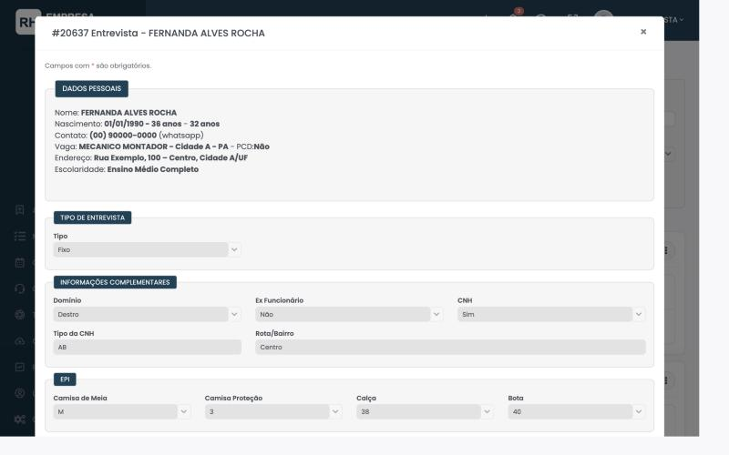
Formulário de entrevista do candidato
7.3 Resultado Integrado
Entrevistas › Resultado Integrado
Reúne o resultado final do candidato e é o ponto de partida para a admissão. Cada card mostra o Cargo, PCD, o Responsável pelo encaminhamento e três marcos com a data em que ocorreram:
Enc. Documentos — encaminhado para envio de documentos (pré-admissão);
Enc. Exame — encaminhado para exames;
Enc. Treinamento — encaminhado para treinamentos.
No menu ⋮: Encaminhar, Editar, Visualizar e Imprimir. É possível marcar vários candidatos (ou Selecionar todos) para trabalhar em lote. Filtros: período, Candidato/CPF, Cargo, Estado, Classificação individual, Classificação RH e, em Mais filtros, Nota RH.
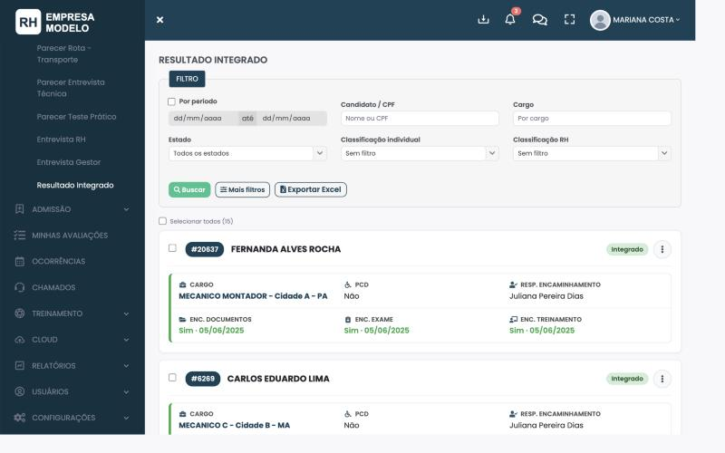
Resultado Integrado, com os três encaminhamentos
8. Admissão
O menu Admissão acompanha o candidato do envio de documentos até o desligamento. A ordem natural de uso é:
Pré-admissão→Controle de Exames→Processo (Admitir)→Histórico→Pós-admissão
Quem não passou pelo recrutamento entra direto pela Admissão avulsa, dentro de Processo.
8.1 Pré-admissão (documentos)
Admissão › Documentos › Pré-admissão
Acompanha os documentos enviados pelos candidatos encaminhados. A lista mostra Código, Nome, CPF, Vaga, quantidade de anexos recebidos e Status. Por padrão o filtro Status vem em Em processo.
Cada linha tem três ações:
Ícone
Ação
Lupa
Visualizar — abre os documentos enviados pelo candidato.
Seta
Reenviar E-mail — manda novamente ao candidato o e-mail com o link de envio de documentos.
Check
Finalizar — encerra a pré-admissão daquele candidato.
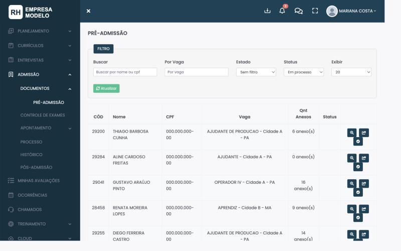
Pré-admissão — documentos por candidato
Conferir os documentos
Em Visualizar, os documentos aparecem agrupados por tipo: Laudo médico (somente PCD), Currículo, Foto 3x4, RG/CPF, Comprovante de endereço, CTPS digital, Título de eleitor, Certificado de reservista, PIS, Certificado de escolaridade, Conta bancária, documentação de filhos, cartão de vacina, certificados de função e outros. Cada arquivo tem os botões Ver e Baixar. Tipos sem arquivo mostram “Nenhum anexo enviado”.
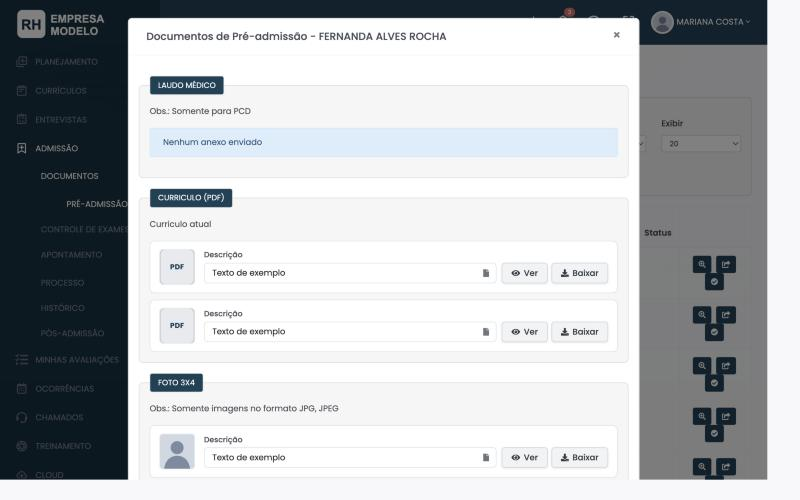
Documentos enviados pelo candidato
8.2 Controle de Exames
Admissão › Controle de Exames
Lista os colaboradores e candidatos com exames ocupacionais em andamento, mostrando o Cargo e a data do último encaminhamento. Filtros: período, Nome, CPF e Status.
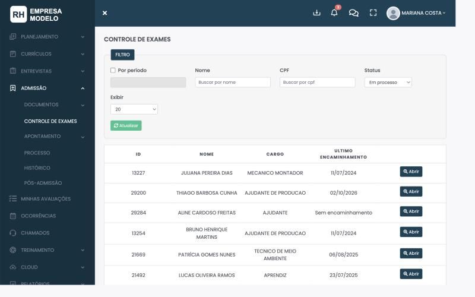
Controle de exames
Encaminhar para exame
Clique em Abrir na linha da pessoa.
Confira os Dados pessoais no topo da janela.
Na aba Encaminhar, escolha o Tipo de ordem: Admissional, Periódico, Pericial, Mudança de Função, Retorno ao Trabalho ou Demissional.
Escolha a Clínica, a Data para realização e o PCMSO.
Ligue Enviar E-mail se quiser que o encaminhamento seja enviado por e-mail.
Clique em Salvar.
A aba Encaminhados mostra o histórico de encaminhamentos da pessoa e a aba Validação SESMT registra a validação do resultado.
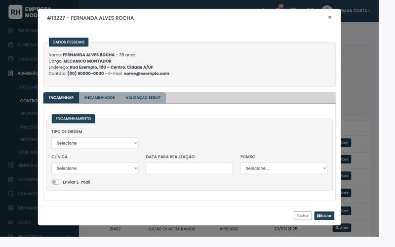
Encaminhamento para exame
8.3 Processo
Admissão › Processo
É a tela central da admissão. Cada card representa um candidato e mostra Centro de custo, Cargo, Contato, Unidade e uma linha de conferência com o que já foi cumprido:
Enc. Doc, Enc. Exame e Enc. Trein. — encaminhamentos feitos no Resultado Integrado;
Resp. Enc. — quem encaminhou;
Crachá e Foto 3x4 — itens pendentes aparecem com sinal vermelho;
Data ASO, Data Admissão e Tipo Admissão.
O selo ao lado do nome mostra a situação: Admitido, Desistência e outras. O menu ⋮ oferece Admitir, Visualizar e Gerar PDF.
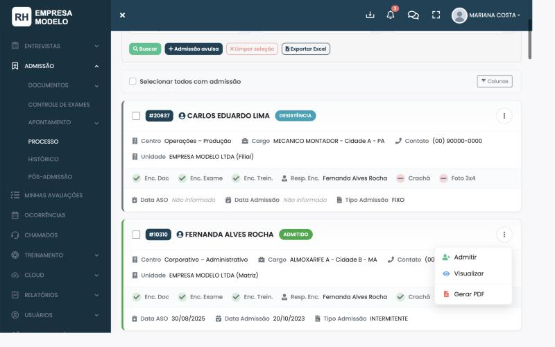
Processo de admissão, com o menu de ações aberto
Filtros disponíveis: Por período, Data do ASO, Data da Admissão, Lotação, Centro de custo, Colaborador/CPF, Cargo, Estado, Status admissão, Tipo admissão e Por demitido. O botão Colunas escolhe o que entra na exportação feita por Exportar Excel; Selecionar todos com admissão marca os cards para exportar em lote.
Admitir um candidato do processo seletivo
Localize o candidato pelos filtros.
Confira na linha de conferência se documentos, exame e treinamento estão concluídos.
Abra o menu ⋮ e escolha Admitir. A janela abre identificada pelo código e nome do candidato, já com os dados vindos do currículo e da entrevista.
Revise as seções de dados pessoais, endereço, contato, documentos, formação e EPI.
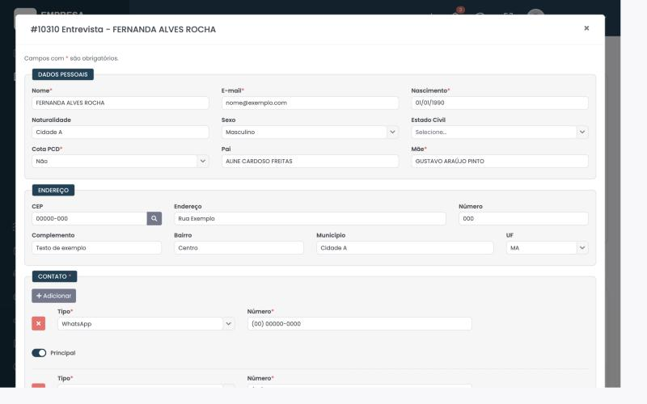
Janela de admissão — dados pessoais, endereço e contato
Em Exceção e responsável, indique se há exceção e quem é o Responsável pelo envio.
Em Lotação e contrato, confira Área, Centro de Custo, Função e Salário.
Em Documentos e tipo, informe a situação do Documento e do Documento Portaria e o Tipo de admissão.
Em Treinamento e status, informe a situação do Treinamento, o Número do Crachá, o Padrão de treinamento, o Status* e a Data da Admissão*. A Data do ASO vem do controle de exames.
Complete PIS e CTPS, Férias, Dependentes, Dados bancários e a Foto escaneada.
Clique em Salvar.
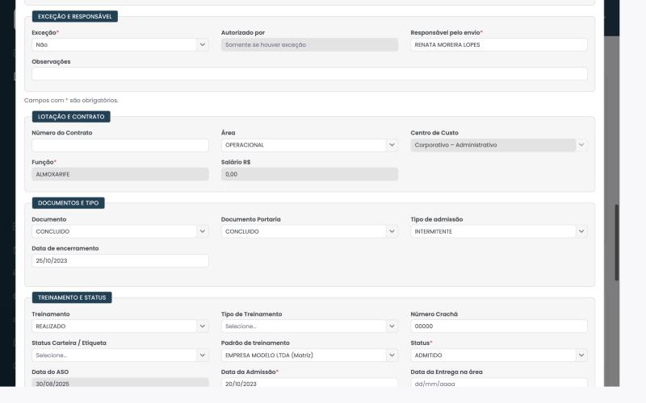
Janela de admissão — lotação, contrato, documentos e status
8.4 Admissão avulsa
Admissão › Processo › + Admissão avulsa
Use a admissão avulsa para admitir alguém que não passou pelo fluxo de recrutamento do sistema (sem currículo, entrevista ou resultado integrado). Em uma única janela você registra tudo o que, no fluxo normal, viria das etapas anteriores.
Passo 1 — Informar o CPF
Em Admissão › Processo, clique em + Admissão avulsa.
Digite o CPF* e saia do campo (Tab ou clique fora).
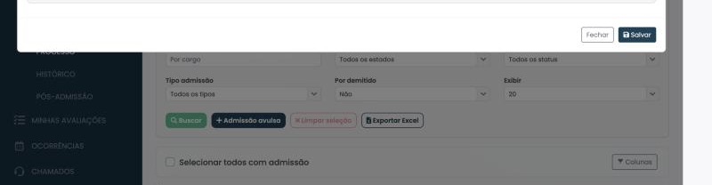
A admissão avulsa começa apenas com o CPF
O sistema procura o CPF na base e libera o restante do formulário:
Situação do CPF
O que acontece
Não encontrado
O formulário abre em branco para você preencher todos os dados.
Já cadastrado
O formulário abre com os dados que o sistema já tem dessa pessoa. Revise e complete.
Ex-funcionário
Aparece o aviso amarelo Ex-Funcionário. Se houver pendência, o botão Verificar Pós Admissão abre a pós-admissão dessa pessoa em outra aba para conferência antes de readmitir.
Passo 2 — Dados da pessoa
Dados pessoais: Nome *, E-mail *, Nascimento *, Naturalidade, Cota PCD * (ao marcar Sim, aparece o campo CID), Sexo, Estado civil, Pai e Mãe *.
Endereço: CEP (a lupa busca o endereço), Endereço, Número, Complemento, Bairro, Município e UF.
Contato*: Tipo, Número e indicação do contato Principal. Use + Adicionar para mais de um telefone.
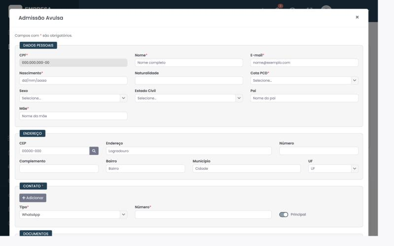
Dados pessoais, endereço e contato
Passo 3 — Documentos, formação e vaga
Documentos: CNH, RG e data de emissão do RG.
Formação: escolaridade (a partir de certo nível, aparece o campo Curso).
Sobre a vaga: Vaga * (digite e selecione), Data de admissão prevista, se é Ex-funcionário, se aceita Turno 6x2 e se foi Indicado * — ao marcar Sim, informe quem indicou e para qual área.
EPI: tamanhos de Calça, Bota, Camisa de proteção e Camisa de meia.
Rotas: Bairro da rota e pontos de referência da rota e da residência.
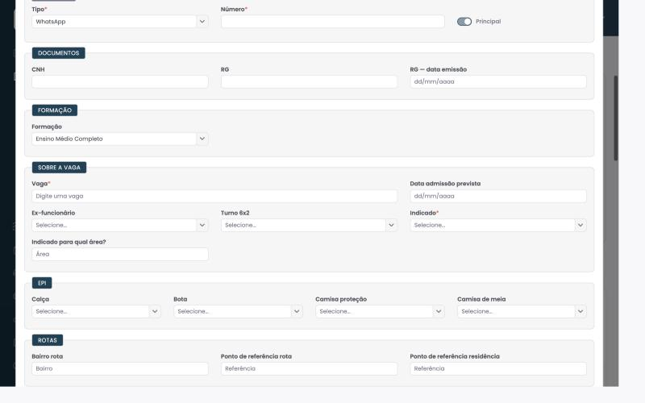
Documentos, formação, vaga, EPI e rotas
Passo 4 — Encaminhamentos e contrato
Documentos, Exame e Treinamento: informe em cada um se a pessoa foi encaminhada. Documentos e Treinamento são obrigatórios *.
Exceção e responsável: Exceção * (se Sim, informe quem autorizou), Responsável pelo envio * e Observações.
Lotação e contrato: Número do Contrato, Área, Centro de Custo, Função * e Salário.
Encaminhamentos, exceção e início de lotação e contrato
Passo 5 — Documentos, treinamento e status
Documentos e tipo: situação do Documento e do Documento Portaria, e o Tipo de admissão.
Treinamento e status: situação do Treinamento, Número do Crachá, Status da Carteira/Etiqueta, Padrão de treinamento, Status*, Data do ASO, Data da Admissão, Data da entrega na área e Biometria.
PIS e CTPS: PIS, número, série, UF e data de emissão da CTPS, certificado de reservista e título de eleitor (número, sessão e zona).
Documentos e tipo, treinamento e status, PIS e CTPS
Passo 6 — Férias, dependentes, banco e foto
Férias:+ Adicionar período registra períodos de férias já existentes.
Dependentes:+ Adicionar dependente inclui cada dependente.
Dados bancários: Banco *, Agência *, Conta * e Tem PIX? *.
Foto escaneada: selecione ou arraste a imagem (JPG, PNG, WEBP ou GIF).
Confira os campos obrigatórios e clique em Salvar. Ao concluir, o sistema exibe a mensagem Admissão Concluída!.
Férias, dependentes, dados bancários e foto
Atenção: depois de digitado, o CPF fica bloqueado para edição. Se informou o CPF errado, feche a janela com Fechar e comece de novo.
8.5 Apontamento › CIH
Admissão › Apontamento › CIH
Registro de ocorrências do colaborador (por exemplo, ajuste de ponto). Cada lançamento tem Tipo, Data da ocorrência, quem fez o Lançamento, Lotação, Centro de custo, Gestor responsável, a descrição da Ação e o fluxo de aprovação, com status como Pendente Gestor.
Filtros: período, nome ou código, Status, Tipo, Lotação, Centro de custo e Gestor. Exportar PDF e Exportar Excel geram os relatórios do que está filtrado. Os tipos são mantidos em Apontamento › Tipos CIH.
Lançamentos de CIH
Lançar um CIH
Clique em + Cadastrar.
Em Ocorrência, informe a Data da Ocorrência *, o Tipo *, a Lotação * e o Centro de Custo *.
Em Envolvidos, selecione o(s) Colaborador(es) * — o campo é liberado após escolher lotação e centro de custo.
Em Detalhes, descreva a Ação* tomada, anexe a evidência (PDF, imagem ou documento) e, se quiser, uma Observação.
Clique em Lançar.
Cadastrando um CIH
8.6 Apontamento › Intermitente
Admissão › Apontamento › Intermitente
Controle das convocações de colaboradores intermitentes. A legenda indica convocações Abertas e Encerradas. Filtros: período, nome, Tipos, Áreas, Centros de Custo e Status. O botão + Cadastrar Tipo mantém os tipos de convocação.
Convocar
Clique em + Convocar.
Informe a Data da Convocação, o Prazo de resposta do colaborador e o Tipo.
Escolha a Área e o Centro de Custo.
Selecione o(s) Colaborador(es) e descreva a Ação.
Inclua anexo e observação, se houver, e clique em Lançar.
Convocação de intermitente
8.7 Histórico
Admissão › Histórico
Ficha de cada colaborador: Cargo, Função, CPF, Empresa, Centro de custo, Lotação, Tipo de admissão, Data de admissão e última atualização, com o selo de situação. Filtros: Nome ou ID, CPF, Cargo, Matrícula, Função, Tipo admissão, Status, Lotação e Centro de custo.
Histórico dos colaboradores
Abrir o histórico de um colaborador
Em ⋮ › Abrir histórico, a janela mostra as informações do colaborador e uma aba para cada assunto:
Aba
Conteúdo
Dossiê
Documentos do colaborador: foto 3x4, documento de seleção, check list de admissão, ficha de registro, contrato de trabalho, termos assinados, ordem de serviço, certificados de treinamento e outros. Cada item aceita envio de arquivo e tem os botões Ver, Baixar e Apagar.
Feedback
Registros de feedback.
Medidas Administrativas
Advertências e suspensões.
Avaliação de Experiência / Avaliação Anual
Avaliações do colaborador.
Férias / Afastamento
Períodos de férias e afastamentos.
Benefício
Benefícios concedidos.
CIH
Lançamentos de CIH do colaborador.
Promoção / Metas
Histórico de promoções e metas.
Logs
Registro das alterações feitas no cadastro.
Histórico do colaborador — aba Dossiê
8.8 Pós-admissão
Admissão › Pós-admissão
Lista os colaboradores admitidos com CNPJ, Centro de custos, Cargo, Data da admissão, Data da demissão e documento de demissão. É por aqui que se conduz o desligamento. Filtros: nome, CPF, Cargo, Por demitidos, CNPJ, Centro de Custo e Entrevista de Desligamento. Selecione linhas e use Exportar Excel para exportar.
Pós-admissão
O menu de ações (⋮) de cada colaborador traz:
Demitir — registra a demissão;
Desmobilizar — registra a desmobilização;
Entrevistar — registra a entrevista de desligamento;
Remover Demissão — desfaz uma demissão lançada.
Registrar uma demissão
Abra ⋮ › Demitir. A janela mostra as informações do colaborador.
Antes de fazer o aviso, confirme e marque Checar Estabilidade: CIPA, acidente de trabalho, sindicato, gestante e aposentadoria (itens da CLT ou CCT).
Informe a Data de desmobilização, o Motivo da rescisão contratual e o Tipo de Aviso.
Em Observação, registre quem solicitou e o comentário.
Janela de demissão
9. Minhas Avaliações
Minhas Avaliações
Mostra as avaliações de desempenho e de experiência em que você participa como avaliador ou avaliado. Escolha o Ano e a Avaliação (ciclo) e, se quiser, filtre por etapa do fluxo, Avaliador, Colaborador e papel (“Como”).
O bloco Fluxo da avaliação mostra as etapas do ciclo, por exemplo:
1 · Auto Avaliação→2 · Gestão (Avaliador Final)
Abaixo, cada colaborador aparece com a situação atual (como Pendente avaliação gestor), o percentual concluído, o Progresso das etapas e o Próximo no fluxo. Use Visualizar para abrir a avaliação.
Minhas Avaliações — fluxo e progresso
10. Ocorrências
Ocorrências
Registro de solicitações e ocorrências internas, organizadas por Setor, Tag, Tipo e Status. A lista mostra número, Assunto, Status, última atualização, data de criação e usuário. A legenda de cores diferencia Anotação, Nova ocorrência, Ocorrência em andamento e Ocorrência finalizada. Exibir abre a ocorrência para leitura e acompanhamento.
Ocorrências
Abrir uma ocorrência
Clique em + Nova Ocorrência.
Em Para, digite e selecione o usuário destinatário.
Informe o Assunto e escolha Setor, Tipo e Tag.
Escreva a mensagem e inclua anexos, se houver.
Clique em Cadastrar.
Os botões + Cadastrar Tag e + Cadastrar Setor mantêm as classificações.
Nova ocorrência
11. Treinamento
11.1 Portaria
Treinamento › Portaria
Lista para liberação de acesso, com Nome, CPF, RG/Emitente, Filiação, Cargo, Função e se há Foto 3x4. Marque as pessoas e use Imprimir ou Exportar Excel. O ícone de lápis edita os dados da pessoa. Filtros: nome ou CPF, Vaga, Estado e PCD.
Portaria
11.2 Carteira / Etiquetas
Treinamento › Carteira/Etiquetas
Controle dos treinamentos de cada colaborador e emissão da carteira. Cada colaborador aparece com Empresa, Centro de custo e Padrão de treinamento, seguido da tabela de treinamentos: Data do treinamento, Data de vencimento, Anexo FAT, Status e se é exibido na carteira.
Situação
Significado
Em dia
Treinamento válido.
Vencendo
Vencimento próximo — programe a reciclagem.
Vencido
Validade expirada.
Carteira/Etiquetas — treinamentos por colaborador
Filtros
Período de vencimento, Período treinado, Treinados, Colaborador/CPF, CNPJ, Centro de custo, Vaga, Cargo, Situação e Treinamentos específicos. Em Mais filtros: Padrão, Foto 3x4, Crachá, PCD e UF. O botão Filtrar treinamentos restringe quais treinamentos aparecem na tabela.
Ações por colaborador (menu ⋮)
Treinamento — lança um treinamento;
Bloqueio — registra um bloqueio;
Treinamento/Bloqueio — os dois em uma única operação;
Atualizar treinamento — corrige datas de um treinamento existente.
Gerar carteiras
Filtre os colaboradores desejados.
Marque-os individualmente ou use Selecionar todos.
Clique em Gerar carteira.
Exportar Excel gera a planilha da carteira de treinamentos, entregue na área de downloads.
11.3 Importação de treinamentos
Treinamento › Importação
Lança treinamentos em lote a partir de uma planilha, com o mesmo comportamento da carteira: cria o treinamento se não existir e atualiza o vencimento se já existir.
Clique em Baixar modelo Excel. O modelo já vem com os colaboradores e treinamentos e tem uma aba de instruções.
Preencha a aba Dados sem alterar os cabeçalhos. Em colaborador e treinamento, use as listas suspensas da planilha.
Em data_treinamento, use o formato dd/mm/aaaa (ex.: 15/03/2026).
data_vencimento é opcional: vazio, o sistema aplica o prazo do treinamento; preenchido, vale a data informada.
Em Enviar planilha, escolha o arquivo .xlsx e clique em Enviar para importação.
Acompanhe o resultado na aba Importados. O sistema também avisa pelo sino quantas linhas foram processadas, quantas tiveram sucesso e quantas tiveram erro.
Atenção às datas: não use formatos como 15-03-2026 ou 3/15/2026, nem ano com dois dígitos.
Importação de treinamentos, com o passo a passo na própria tela
11.4 Emissão de Certificados (NR33/NR35)
Treinamento › Emissão Certificados (NR33/NR35)
Emite os certificados de NR33 e NR35. Filtre por período, nome, CPF, Vaga, Cliente, Área, Cargo, Estado, se há instrutor de NR33/NR35, situação de NR33/NR35 e Admitidos. Marque os colaboradores e clique em Certificados.
Emissão de certificados NR33/NR35
12. Cloud
Cloud › Cadastro
Área de armazenamento de arquivos do sistema. Em Cadastro, use + Novo Cloud para criar um espaço e a busca para localizar um existente. Os parâmetros gerais ficam em Cloud › Configurações.
13. Relatórios
Os relatórios seguem um mesmo formato: filtros no topo, indicadores clicáveis, e duas visões — Lista (detalhe por colaborador) e Gráficos. Todos têm Exportar Excel.
13.1 Vencimento de ASOs
Relatórios › Vencimento de Asos
Controle da validade dos exames ocupacionais. Indicadores: Total, Vencidos, A vencer (60 dias) e Em dia. A lista mostra Colaborador, Lotação, Centro de custo, Tipo de exame, Data do ASO, Vencimento e Situação, com as linhas coloridas conforme a situação.
Filtros: Período de vencimento, Colaborador, CNPJ, Centro de custo, Tipo de exame e Vencido.
Relatório de vencimento de ASOs
13.2 Vencimento de Treinamentos
Relatórios › Treinamentos
Mesma lógica, para treinamentos: Total, Vencidos, A vencer (≤ 30 dias) e Em dia. A lista traz Colaborador, Centro de custo, Segmento, Treinamento, Data do treino, Vencimento e Situação. Filtros: Período de vencimento, Colaborador, CNPJ, Centro de custo, Segmento e Treinamento.
Relatório de vencimento de treinamentos
13.3 Efetivo
Relatórios › Efetivo
Quadro de colaboradores ativos, agrupado por centro de custo, com Código, Nome, Cargo, Salário, Tipo de admissão e Data de admissão. O topo mostra o total de funcionários. Filtros: Colaborador, CNPJ, Centro de custo, Tipo de admissão, Cargo e Período de admissão.
Relatório de efetivo por centro de custo
13.4 Avaliação de Experiência
Relatórios › Avaliação de Experiência
Acompanha as avaliações do período de experiência. Indicadores: Total de avaliações, Vencidas, Vence hoje, A vencer, Sem avaliação, Com uma avaliação e Completas. O botão Ocultar Resumo esconde os indicadores.
Filtros: Status, Colaborador, Centro de custo, Gestor, Avaliações e Cargo; em Mais filtros, Função e Definição. O botão Gerar todos os links (página atual) cria os links de avaliação dos colaboradores exibidos na página.
Relatório de avaliação de experiência
13.5 Demais relatórios
Relatório
Conteúdo e filtros principais
Férias
Férias por colaborador, com Centro de custo, Quantidade de dias, período de Férias, Período aquisitivo, Data limite e Status. Filtros: tipo de data, período, Colaborador/CPF, Status, CNPJ e Centros de custo.
Vencimento Férias
Acompanhamento dos prazos de vencimento de férias.
Medidas Administrativas
Medidas aplicadas (advertências, suspensões), com data, retorno, colaborador, causa e descrição. Filtros: período, Colaborador, CNPJ, Status, Tipo, Causa e Centros de custo.
Centro de Custo
Visão por centro de custo.
Aniversariantes
Aniversariantes do período.
14. Usuários e grupos
14.1 Usuários do Sistema
Usuários › Usuários do Sistema
Lista todos os usuários com Nome, Grupo, Tipo (Gestor, Funcionário, Fornecedor…), E-mail de login e Status. Filtre por nome, e-mail, Grupo, Tipo e Status. O ícone verde de edição altera os dados e o grupo do usuário.
Usuários do sistema
Criar um usuário
Clique em Criar novo usuário.
Informe o Nome do usuário e o E-mail, que será o login.
Escolha o Grupo (define as permissões) e o Tipo de Usuário.
Defina se está Ativo e se é Gestor.
Em Contatos, use + Adicionar para incluir o telefone.
Em Notificações WhatsApp, ligue os assuntos que esse usuário deve receber: Recrutamento, Exames, Admissão, Intermitente, Carta Oferta, Transporte e Movimentação.
Clique em Cadastrar.
Cadastrando um usuário
14.2 Grupos de Usuários
Configurações › Grupos de Usuários
Os grupos definem o que cada usuário pode ver e fazer. A lista mostra Nome, Descrição, quantidade de usuários no grupo e Situação.
Grupos de usuários
Criar ou editar um grupo
Clique em Novo grupo (ou em Editar na linha do grupo).
Passo 1 — aba Dados do grupo: informe o Nome do grupo * e a Descrição *, e mantenha Grupo ativo ligado. Desligar bloqueia o uso do perfil sem apagar o cadastro.
Passo 2 — aba Permissões: marque as permissões (habilidades) que o grupo terá.
Clique em Criar grupo.
Importante: os itens do menu e as ações de cada tela dependem do grupo do usuário. Se uma opção descrita neste manual não aparecer para alguém, é uma questão de permissão do grupo.
Novo grupo de usuários
15. O ciclo completo do colaborador
Este roteiro liga os módulos na ordem em que normalmente são usados, da necessidade de contratação ao desligamento.
#
Etapa
Onde
O que acontece
1
Preparar cadastros
Cadastro › Áreas, Centro de Custos, Cargos, Benefícios, Lista de Treinamentos
Garante que cargo, área, centro de custo e gestores existem.
2
Requisitar a vaga
Planejamento › Requisição de Vaga
Solicitação aprovada pelo gestor e, por último, pelo RH.
3
Publicar a vaga
Cadastro › Vagas Abertas
Vaga ativa no site, com link público para candidatura.
4
Triar currículos
Currículos › Recrutamento
Análise e seleção dos candidatos (ação Recrutar).
5
Acompanhar selecionados
Currículos › Selecionados
Status, prova e etapa de cada candidato.
6
Entrevistar e emitir pareceres
Entrevistas › Parecer RH e demais pareceres
Notas e pareceres de RH, rota, entrevista técnica e teste prático.
7
Consolidar e encaminhar
Entrevistas › Resultado Integrado
Encaminhamento para documentos, exame e treinamento.
8
Conferir documentos
Admissão › Documentos › Pré-admissão
Conferência dos anexos enviados pelo candidato.
9
Exames
Admissão › Controle de Exames
Encaminhamento à clínica e registro do ASO.
10
Treinamentos
Treinamento › Carteira/Etiquetas ou Importação
Lançamento dos treinamentos e emissão da carteira.
11
Admitir
Admissão › Processo
Ação Admitir — ou Admissão avulsa para quem não veio do recrutamento.
Dossiê, vencimentos de ASO e treinamento, avaliação de experiência, CIH.
13
Movimentar
Planejamento › Movimentação
Férias, mudança de cargo, transferência, valor extra.
14
Desligar
Planejamento › Movimentação (Demissão) e Admissão › Pós-admissão
Solicitação aprovada, demissão registrada e entrevista de desligamento.
16. Observações sobre este manual
Dados fictícios: todas as telas foram capturadas com dados de exemplo. Logotipo, nome da empresa, clientes, lotações, centros de custo, fornecedores, clínicas, endereços, pessoas, CPF, RG, filiação, e-mails, telefones, fotos, salários e os textos de missão, visão e valores não correspondem a dados reais.
Permissões: o manual descreve o que está disponível para um usuário com perfil de RH. Menus e botões variam conforme o grupo de cada usuário.
Chamados: o módulo de Chamados não carregou no ambiente em que as telas foram capturadas e, por isso, não está descrito.
Telas descritas sem imagem: Departamentos, Certificados, Empresa Treinamento, Provas, Mobilização, Cloud e os relatórios de Férias, Vencimento Férias, Medidas Administrativas, Centro de Custo e Aniversariantes.
Telas apenas citadas: Parecer Rota, Parecer Entrevista Técnica, Parecer Teste Prático, Entrevista RH, Entrevista Gestor, Tipos CIH e Cloud › Configurações.